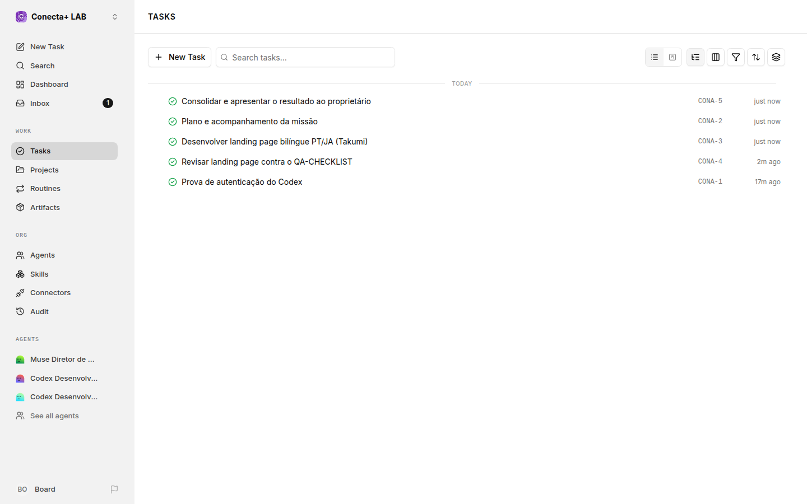
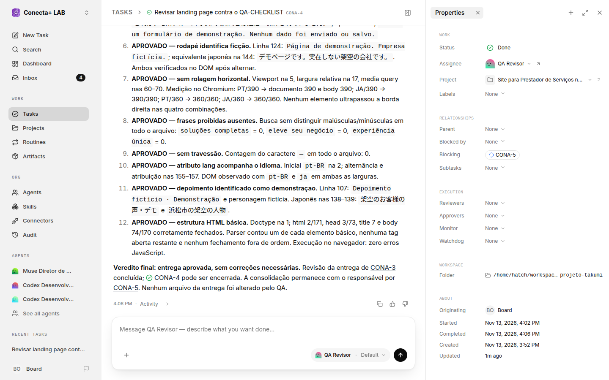
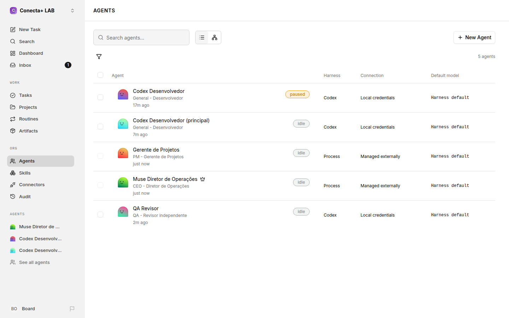
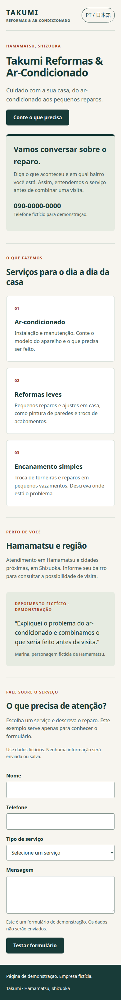
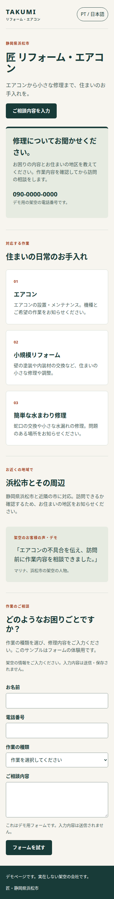
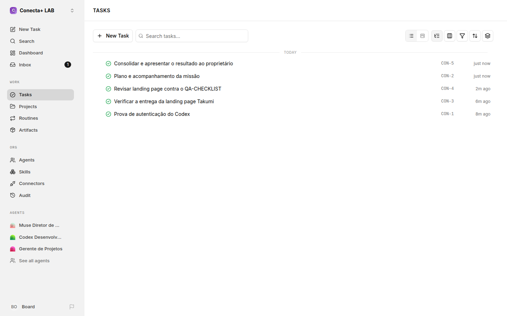
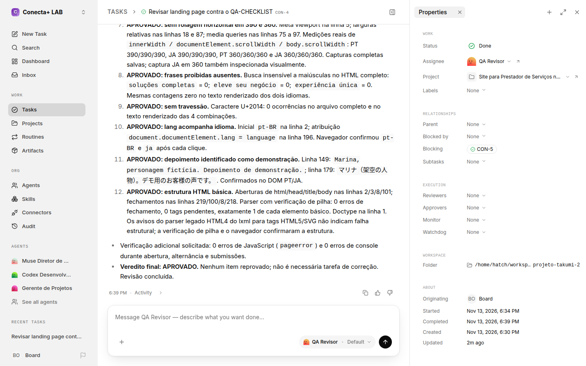
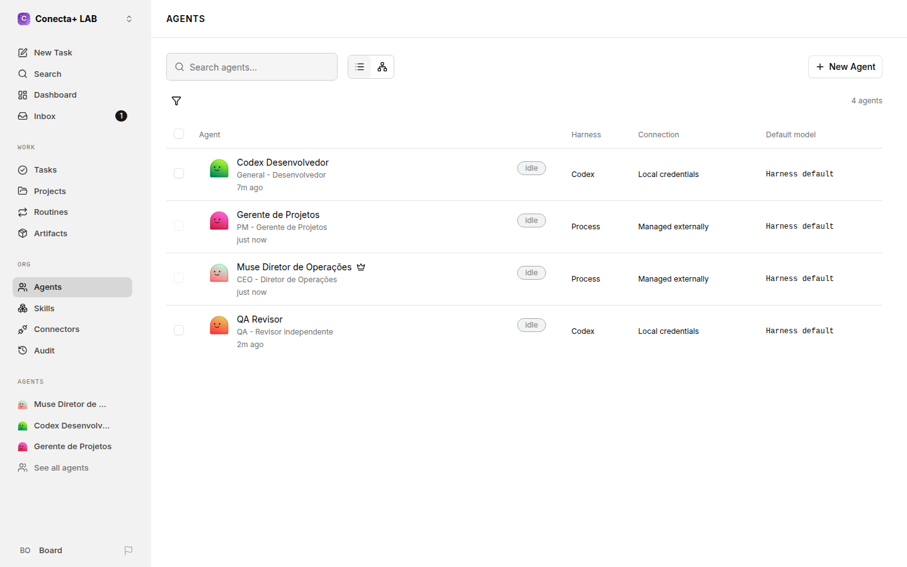

Conecta+ LAB: uma equipe de agentes trabalhando no Paperclip
Teste fechado feito na VM do Muse, com dados fictícios. O Muse coordenou a equipe pelo Paperclip, o Codex construiu o site e um segundo agente Codex revisou tudo como QA. Nenhum sistema de cliente foi tocado.
Veredito: a integração Muse, Paperclip e Codex funcionou de ponta a ponta. As 5 tarefas da missão foram concluídas, o QA aprovou a entrega em 12 de 12 itens e o custo em dinheiro foi zero, porque o trabalho consumiu a assinatura ChatGPT que já existe.
O site que a equipe criou
Landing page bilíngue, em português e japonês, para uma empresa fictícia de reformas e ar-condicionado em Hamamatsu. Abra e navegue: o botão de idioma no topo troca a página inteira sem recarregar.
Arquivo idêntico ao entregue pelo Codex e aprovado pelo QA. SHA-256: 5c0850cafa8eaf628b867e00dee2fc418077f5f7444f683098c326183868fbe1
A equipe
Muse, Diretor de Operações: criou a empresa, o projeto, as tarefas e as dependências no Paperclip, acompanhou as execuções e consolidou o resultado.
Codex, Desenvolvedor: construiu a landing page dentro do workspace do projeto, usando o login ChatGPT existente.
QA, Revisor: segundo agente Codex, com identidade separada. Abriu a página num navegador de verdade e testou item por item.
Gerente de Projetos: papel organizacional, dono do plano e do acompanhamento da missão.
As tarefas da missão
CONA-1 · Prova de autenticação do Codex · concluída
CONA-2 · Plano e acompanhamento da missão · concluída
CONA-3 · Landing page bilíngue PT/JA da Takumi · concluída
CONA-4 · Revisão do QA contra o checklist · concluída, 12 de 12 itens
CONA-5 · Consolidação e apresentação ao proprietário · concluída
Capturas do painel

O quadro de tarefas da Conecta+ LAB no Paperclip, com responsáveis e status.

A tarefa do QA aberta, com o veredito registrado item por item.

Os agentes da empresa. O primeiro Codex da lista ficou pausado por um defeito de ciclo de vida e foi substituído; ele aparece no painel como evidência.
O site no celular

Versão em português, tela de 390px.

Versão em japonês, depois do clique no botão de idioma.
Tempo, custo e recursos
Tempo total do teste: cerca de 55 minutos, da auditoria ao relatório.
A missão em si: uns 4 minutos de desenvolvimento e uns 5 minutos de revisão.
Custo em dinheiro: US$ 0. Uso de modelo registrado como assinatura ChatGPT.
Servidor do laboratório: cerca de 865 MB de memória. Banco de dados: 34 MB.
Limitações encontradas, sem maquiagem
O motor padrão do Paperclip para o Codex falhou com a conta ChatGPT. Funcionou trocando para o motor CLI com o Codex oficial.
Um agente ficou preso no estado de pausa e precisou ser substituído por um novo.
Orçamento zero nos papéis sem modelo pausou a empresa inteira até o ajuste. Os portões de orçamento funcionam, até demais.
Papéis externos, como o Muse e o Gerente de Projetos, não escrevem nas tarefas fora de uma execução própria. Eles atuaram pelo quadro, com os registros assinados como do operador.
O painel ao vivo segue só na VM do laboratório, sem exposição pública, porque ele controla agentes e roda sem senha neste modo de teste.
Painel remontado (rodada 2, noite de 13/11)
A máquina do Muse foi trocada duas vezes depois do primeiro teste e o painel vivo se perdeu nas duas, porque o banco de dados ficava fora da pasta que sobrevive. A pedido do Minoru, o escritório foi montado de novo e a missão foi reexecutada de verdade: prova de autenticação refeita pelo Codex, entrega verificada com hash, e o QA aprovou de novo, 12 de 12 itens, testando num navegador real.
Desta vez ficou a lição aplicada: existe uma cópia do banco guardada na pasta do projeto e um comando único de religar. O ciclo foi testado apagando o banco vivo e os programas: um comando trouxe tudo de volta, empresa ativa e as 5 tarefas concluídas, sem reconfigurar nada.

O painel remontado: as 5 tarefas da missão concluídas (CON-1 a CON-5).

A tarefa do QA na rodada 2, com o veredito de aprovação registrado.

Os agentes da empresa remontada. Sem o agente preso em pausa da rodada 1: desta vez os agentes nasceram com o disparo desligado e cada execução foi liberada pelo diretor, uma por vez.